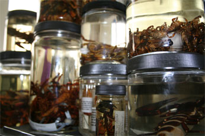
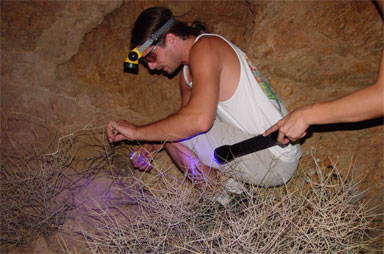
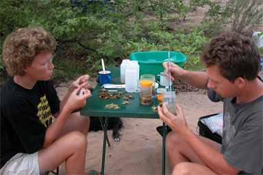

Specimen Collections
The AMNH contains the second-largest collection of scorpions, and the largest collection of minor arachnid orders, in North America. The myriapod collections are also among the largest in North America. The collections include a worldwide representation of arachnid and myriapod taxa, with a strong emphasis on material from North America and elsewhere in the New World. The majority of specimens are preserved in ethanol, although large collections of slide-mounted Acari and pseudoscorpions are also represented.
Historically, scorpions comprise the second largest component of the AMNH Arachnid and Myriapod Collections, after spiders. Currently comprising over 30,000 specimen-lots, including several hundred type specimens, the AMNH has the fourth-largest scorpion collection in the world, including a vast array of New and Old World taxa. Particular strengths of the collections are in New World, and especially North American, and southern African families. In addition, there are reasonable holdings of taxa from North and South America, Europe, the Middle East, Southeast Asia, Australia and Oceania. Continuing fieldwork by Prendini and his research group has vastly expanded the AMNH holdings of scorpions, minor arachnid orders and myriapods. Collectively, the ca. 20,000 specimens obtained by Prendini and his research group since 2002 has more than doubled Museum holdings of amblypygids, schizomids, solifuges, and uropygids, and increased Museum holdings of scorpions by more than a third.
The AMNH has one of the two largest collections of vaejovid scorpions in the world (the California Academy of Sciences has the other). It incorporates the Oscar F. Francke collection, rich in vaejovid and iurid material from Mexico and the southwestern USA, and containing many large series collected by UV light detection, but also containing material from elsewhere. It also incorporates the Willis J. Gertsch collection, containing a significant amount of material from Mexico and the southwestern U.S.A.
Acquisition of the Alexis Harington collection (ca. 6,500 specimens), the Lorenzo Prendini collection (ca. 2,000 specimens) have greatly increased our holdings of southern African scorpions. The Alexis Harington collection comprises a more representative sample than most southern African collections. All families, genera, and most species of southern African scorpions are represented, including any rare or seldom collected species. Most species are represented by series from multiple localities, many representing new records and/or range extensions.

Curation of Collections
In May 2002, the Arachnid and Myriapod Collections were transferred from offices in the former Department of Entomology into a new facility within the AMNH, the Natural Sciences building (NSB). In the NSB, specimens are stored in state-of-the-art cabinetry and a climate-controlled environment to ensure their longevity. A long-term plan to upgrade these collections began in 2004. All old, unstandardized bottles and vials, many with bake-lite closures or rubber stoppers, were replaced by new glass jars of standardized volumes with polyethylene closures and polypropylene-foam liners. Significant progress has been made but there are still large parts of the collection to be done. After the rebottling process is completed, the entire collection will be databased and catalogued by volunteers, who will also print out new labels for every specimen or specimen-lot.
Collecting
Several (5-20) adult specimens per target taxon should be collected from the same population (locality), if possible. At least one specimen is required for DNA isolation; fewer specimens are required for large species, more for small species. One or more additional specimens are required for future archiving in the
Ambrose Monell Cryo-Collection. At least two specimens (an adult male and female) are required as morphological vouchers, to be deposited in the AMNH Arachnid and Myriapod Collection. When adults are common, these should always be collected preferentially but, when they are not, subadults or juveniles will suffice for DNA isolation provided that the collector is confident that they are conspecific with the adults (which may then be preserved for morphological study). If possible, intact adult specimens from the same population (locality) as the specimens used for tissue samples should be collected as vouchers.

Legal Documentation
AMNH specimen transfer form: All specimens and tissue samples collected by non-AMNH staff and deposited into the AMNH collections are considered 'donations'. Non-AMNH staff must provide a signed copy of the specimen transfer form (
PDF) with other legal documentation (if required) when donating specimens or samples. A completed, signed form must accompany each parcel of specimens received, not each specimen/lot.
Specimens collected in the US: No permits are required if material originates from unprotected lands in the US. Material collected in national parks, reserves, etc. must be accompanied by collecting permits.
Specimens collected beyond US borders: Specimens or tissue samples collected beyond US borders cannot be deposited in the AMNH unless there is evidence that they were collected, exported and imported legally. The following documents are acceptable:
If specimens were collected in countries that do not require collecting or export permits, a letter on letterhead, stating this fact, and hence that the samples were collected and exported legally, will suffice. A letter from someone in an official position, e.g. museum, in the country from which the specimens originated, attesting to this fact is even better.
If specimens were collected in countries that do require permits, copies of permits issued at national (e.g. in Mexico) or provincial (e.g. in South Africa) levels must accompany the specimens for filing at the AMNH.
If collecting permits cannot be obtained or it is unnecessary to do so, a letter on letterhead from someone at an academic institution (museum, university, academy) in the country of origin, stating that the specimens are the property of that institution and are donated (by implication, permanently) to the AMNH will suffice. Alternatively, the letter may be from someone at the donating institution stating that the material was acquired or collected legally (this would usually apply to material that was obtained from a third party). These letters circumvent the need for permits because they imply that the material was collected legally or at least that the burden of proof to demonstrate that rests with the donating individual or institution.
Permanent loans will be accepted in cases where objects or collections are owned by government agencies or institutions whose own collection policies do not allow for transfer of title. When a permanent loan is required, the custodial arrangements must be documented in writing and signed by the lender.
